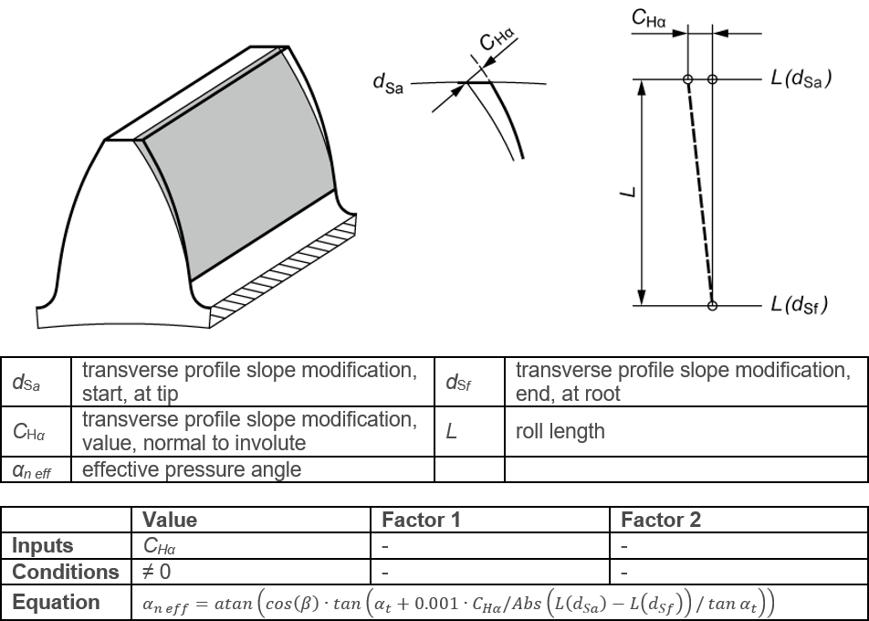

|
|
|


压力角修形（值）
图（参见图 15.46）显示了齿廓图中定义的压力角修形（值）。图中还显示了“值”设置。修形在齿顶和齿根处的起点可以在 选项卡中设置。
压力角修形（值）的设置方式与线性齿顶修形类似（参见"齿顶和齿根修形，线性"章）。但区别在于，压力角修形应用于整个滚动长度。

图 15.46：压力角修形（值）
Pressure angle modification (value)
Figure (see Figure 15.46) shows the pressure angle modification (value) as defined in the profile diagram. The Value setting is also shown in this figure. The start of the modification at the tip and root can be set in the tab.
The pressure angle modification (value) is set as a linear tip relief, in a similar way (see chapter Tip and root relief, linear). The difference is, however, that the pressure angle modification is applied across the entire roll length.
Figure 15.46: Pressure angle modification (value)